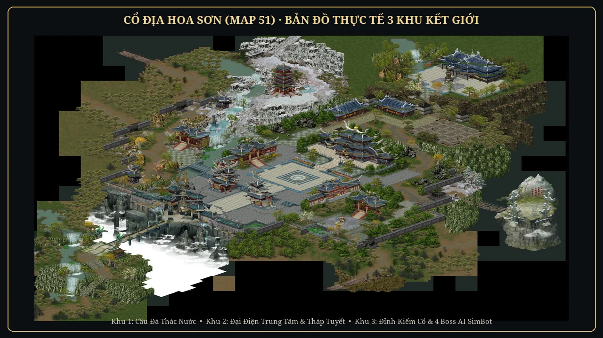
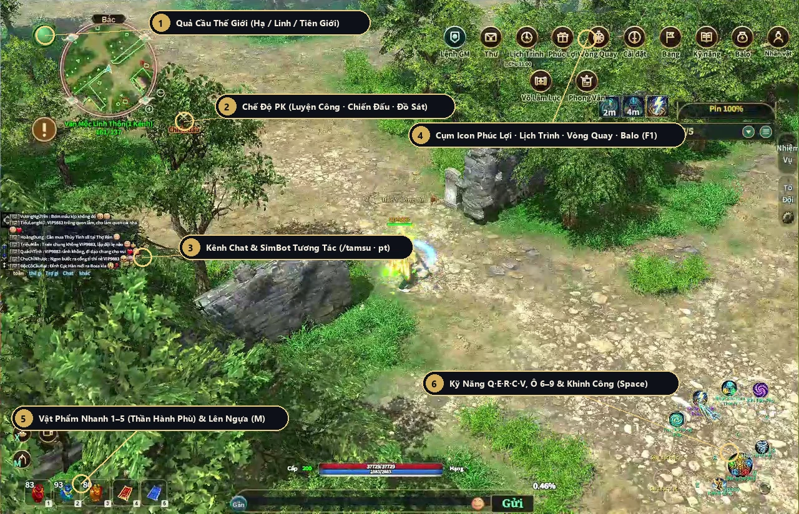

01
Chọn Thế Giới & Tân Thủ 11 Bước
Vào game tại Vân Mộc Linh Thôn, bấm Quả Cầu Thế Giới góc trên trái chọn Hạ Giới nếu muốn train nhàn, mở Thất Nhật Lễ và theo chuỗi Tân Thủ 11 bước tự dẫn đường lên Lv.14+.
Xem 3 Cảnh Giới Thế Giới →
Tổng hợp chuẩn xác toàn bộ cơ chế thực tế trong game cho cả PC Windows và Android — từ quản lý hành trang, rèn đồ, đục lỗ, khảm & tách đá, vượt 5 phó bản, lập đội SimBot V4, PK Ngũ Hành cho tới chọn 3 Cảnh Giới Thế Giới.
Đi theo đúng 4 bước này bạn sẽ nắm vững toàn bộ nhịp chơi từ Lv.1 tại Vân Mộc Linh Thôn tới ngưỡng Chuyển Sinh Lv.200 mà không bỏ sót phúc lợi.
Vào game tại Vân Mộc Linh Thôn, bấm Quả Cầu Thế Giới góc trên trái chọn Hạ Giới nếu muốn train nhàn, mở Thất Nhật Lễ và theo chuỗi Tân Thủ 11 bước tự dẫn đường lên Lv.14+.
Xem 3 Cảnh Giới Thế Giới →Gắn Thần Hành Phù vào phím 4 để mở Rương Thủ Khố Từ Xa, bật Tự Phân Giải Khi Nhặt đồ rác Trắng/Lam và dịch chuyển tới mọi bản đồ luyện công chỉ trong 1 chạm.
Tới Thợ Rèn đập đồ kèm bùa bảo hộ, đục lỗ bằng Hoàng Thủy Tinh, khảm ngọc bằng Lục Thủy Tinh và gỡ ngọc bảo toàn 100% bất cứ lúc nào khi đổi trang bị mới.
Xem Công Thức Rèn & Khảm →Lập đội tối đa 3 SimBot theo vào mọi phó bản để nhân tỉ lệ rơi đồ ×(1 + số bot), gom Điểm Khí Vận quay Thiên Cơ Bảo Bàn, vượt Bình Cảnh Lv.115–120 và chinh phục Cổ Địa Hoa Sơn.
Toàn bộ cơ chế được phân tách theo đúng trình tự tiến hóa của nhân vật, đi kèm hình ảnh thực tế trong game và bảng công thức chính xác.

Trọn bộ thao tác tại Hành Trang (F1), Rương Thủ Khố Từ Xa, Thợ Rèn & Thợ Rèn Thần Bí.
>= +6
Hướng dẫn chi tiết điều kiện vào, cơ chế Boss, mẹo săn Bạch Long, Kiếm Thần Long & Quà Hồi Hương.

Cách tương tác SimBot như người chơi thật, luật PK/Tỷ Thí, Tống Kim 25v25 và công cụ tra cứu Ngũ Hành.
/tamsu), mời 3 SimBot đi mọi phó bản nhân tỉ lệ rơi đồ/daihoi
Làm chủ 3 Cảnh Giới độ khó, 7 dòng dịch chuyển Thần Hành Phù, bản đồ Lv.10–250 & Chuyển Sinh Lv.200.
Lv.10 → Lv.250, phân tầng Tiềm Năng 42–90, Tu Vi Tích Trữ & Chuyển SinhẢnh chụp thực tế từ trong game kèm 6 vị trí quan trọng nhất tân thủ cần nhớ ngay phút đầu vào Vân Mộc Linh Thôn (bấm vào ảnh để phóng lớn).

| Nhóm Thao Tác | Phím / Chuột (PC) | Công Dụng Thực Tế Trong Game |
|---|---|---|
| Di chuyển & Góc nhìn | Chuột Trái · Chuột Phải · Con lăn | Nhấp trái để đi/chọn mục tiêu; giữ phải xoay camera (nhấp phải thi triển chiêu vào mục tiêu gần nhất); cuộn phóng to/thu nhỏ. |
| Kỹ năng & Né đòn | Q E R C V · 6–9 | 5 ô kỹ năng chính (hỗ trợ cả Num0–4) và 4 ô kỹ năng phụ S1–S4. |
| Khinh công & Đứng đánh | Space · Left Shift · Ctrl+Trái | Space bay khinh công, Left Shift né tránh nhanh, giữ Ctrl + nhấp trái đứng tại chỗ xuất chiêu. |
| Vật phẩm nhanh & Ngựa | 1–5 · M | Dùng nhanh máu/mana, Thần Hành Phù (ô 4), Thổ Địa Phù (ô 5); bấm M lên/xuống ngựa. |
| Cửa sổ & Hỗ trợ | F1 · F2 · F7/F8 · ESC | Mở Hành Trang (F1), Nhân Vật (F2), ẩn/hiện tên & thanh máu (F7/F8), menu Hệ Thống (ESC). |
| Tự đánh & Nhặt đồ | Z · F · Tab · T · G | Bật/tắt Auto đánh quái (Z), nhặt vật phẩm (F), đổi mục tiêu (Tab, giữ để hủy), nói chuyện NPC gần nhất (T), chạy tới tọa độ thông báo (G). |
| Mẹo Hành Trang & Chat | Shift+Kéo · /Tên · Ctrl+Click | Trong Balo, Shift + kéo món vào nút Phân Giải/Vứt rồi nhấp phải lặp nhanh; ấn giữ món khoe vào Chat (tối đa 2 món); gõ /TênNhânVật nhắn riêng; Ctrl+Click link trong chat để chép. |
Đến Thợ Rèn Thần Bí → chọn mục Khảm Bảo Thạch → chỉ đặt duy nhất 1 món trang bị đang có ngọc (không đặt thêm ngọc hay thủy tinh) rồi bấm Xác nhận. Toàn bộ ngọc sẽ được tháo nguyên vẹn 100% về hành trang. Xem chi tiết tại Hướng dẫn Tách Đá.
Có! Bấm vào Quả Cầu Thế Giới ở góc trên bên trái màn hình (bên cạnh bản đồ nhỏ) và chọn Hạ Giới (Quái chỉ còn 20% máu / 50% sát thương; riêng Boss Bán Nguyệt & Sa Mạc giảm thêm 50% máu nữa). Bạn có thể đổi qua lại Hạ Giới / Linh Giới / Tiên Giới bất cứ lúc nào (hồi chiêu 3 giây) mà vẫn giữ nguyên phần thưởng. Xem Chọn Thế Giới.
Bạn có thể mời tối đa 3 SimBot vào Tổ đội (hoặc nhắn từ khóa pt / tổ đội / kéo xe trong kênh Đội để triệu tập nhanh). Khi bạn vào bất kỳ phó bản nào (Bán Nguyệt, Sa Mạc, Thông Thiên Tháp, Phong Lăng Độ, Cổ Địa Hoa Sơn), SimBot trong đội sẽ tự động theo vào hỗ trợ và nhân tỉ lệ rơi đồ theo công thức ×(1 + số SimBot). Xem Hệ thống SimBot V4.
Không hề! Khi chạm mốc Lv.120 ở chế độ Chơi Tự Do, toàn bộ kinh nghiệm đánh quái và làm nhiệm vụ tiếp theo được tích lũy an toàn vào kho Tu Vi Tích Trữ, đồng thời bạn vẫn được vào trải nghiệm thử khu vực Map 50. Chi tiết xem tại Đột Phá Lv.120 & Chuyển Sinh.